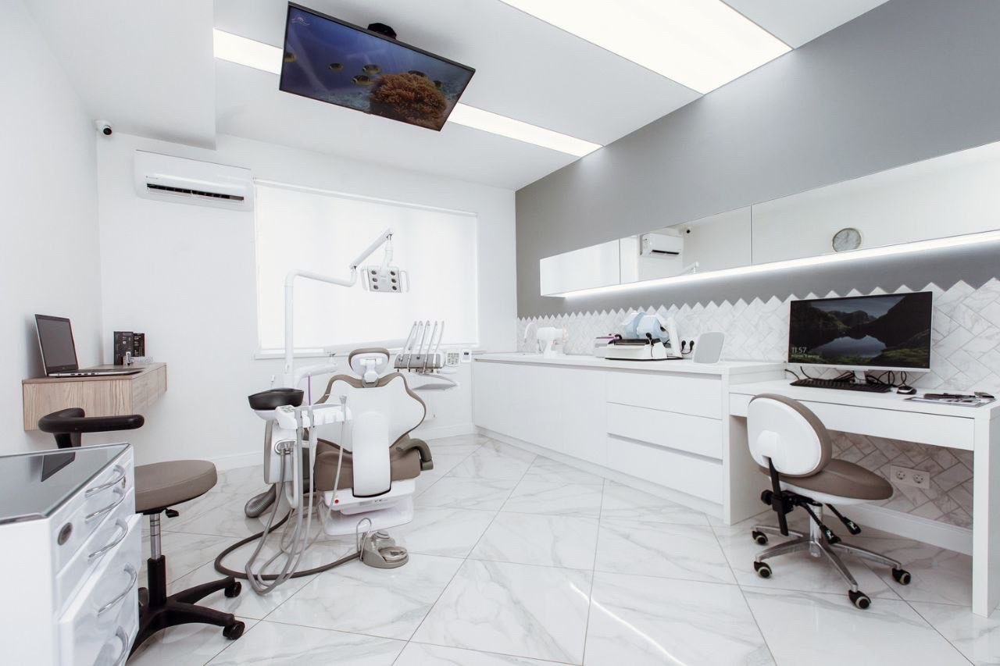

Лечение зубов
Кариес, пломбирование, эндодонтия (лечение каналов) под увеличением и коффердамом, лечение периодонтита и дёсен.
Услуги
Помогаем сохранить здоровье зубов, восстановить улыбку и исправить прикус. Подходящий метод и объём лечения врач определит после консультации и диагностики.
Кариес, пломбирование, эндодонтия (лечение каналов) под увеличением и коффердамом, лечение периодонтита и дёсен.
Комплексная гигиена: ультразвук + Air Flow на японском аппарате NSK, полировка, фторирование. Отбеливание Opalescence, эндоотбеливание потемневшего зуба.
Консультация ортодонта, брекет-системы разных типов и элайнеры с цифровым 3D-планом и фиксированной стоимостью.
Удаление зубов любой сложности, в том числе зубов мудрости. Пластика десны и закрытие рецессий.
Имплантация всех видов — одномоментная, «всё на 4», «всё на 6». Костная пластика и синус-лифтинг. Возможность лечения определяется клинически.
Коронки из диоксида циркония и металлокерамики, виниры, восстановление сильно разрушенных зубов. Работа в собственной лаборатории под микроскопом.
Виниры и художественная реставрация, подбор формы и цвета зуба с прозрачным краем — в рамках показаний и согласованного плана.
Осмотр с фотопротоколом, рентгенография и 3D-снимки, когда нужно. Первичная консультация с планом лечения и расчётом стоимости.
Коронки и виниры «Арт-Ник» изготавливает в собственной зуботехнической лаборатории «Арт-Ник LAB» — без посредников, с работой под микроскопом. Возможна рассрочка на лечение до 12 месяцев.

Перед лечением
Расскажите врачу, что вас беспокоит. После осмотра он определит, какая диагностика потребуется, и обсудит с вами дальнейшие шаги.
Уточнить направление
Администратор подберёт специалиста и сообщит доступное время.